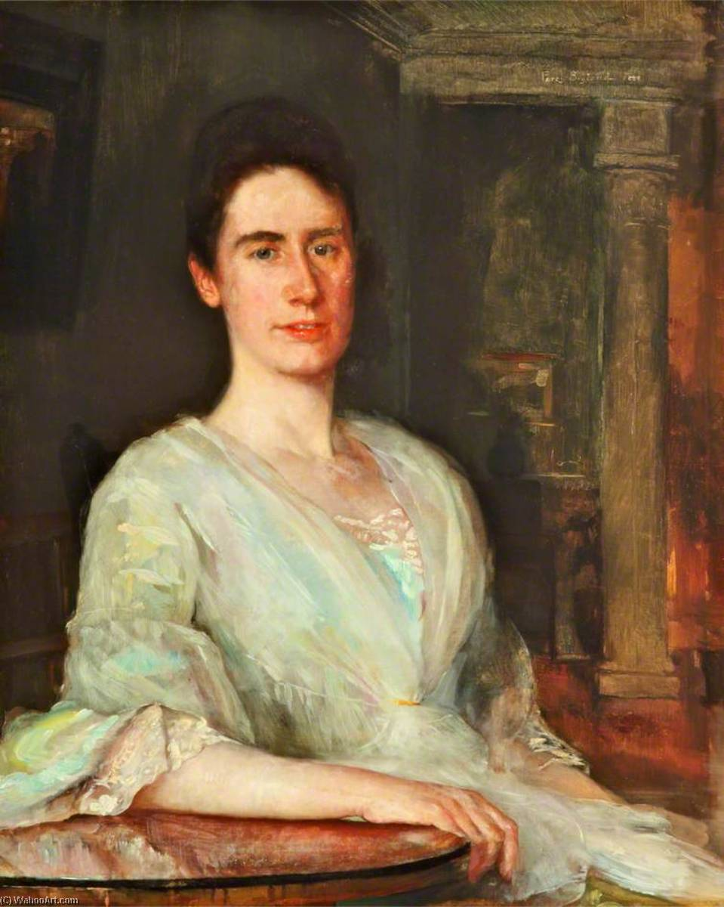

Lady Margaret Holt: The Architect of Philanthropy
While our genealogical research frequently centers on the deep historical roots, manorial surveys, and industrial
footprints of the early Lancashire lines, understanding the modern legacy of the Holt name requires examining those
who shaped its 20th-century history. Among the most remarkable figures in the family's modern chronicle is Lady
Margaret Holt (née Lupton), whose extraordinary dedication to public health and cancer research left an indelible
mark on Manchester and the wider North West.
A seamless handover of purpose
Lady Margaret entered the family lineage in 1931 through her marriage to Sir Edward Holt (II). In doing so, she
inherited a profound multi-generational tradition of philanthropy. Following the extensive charitable foundations
laid by Catherine Holt (wife of Joseph) and Elizabeth Brooks (wife of Sir Edward I), Margaret stepped into
her role with unbounded enthusiasm and a sharp strategic vision.
Together with her husband, she ensured a seamless continuity of the family’s steadfast support for the Christie
Hospital and Holt Radium Institute. Rather than acting as a passive patron, Margaret revolutionized the family's
fundraising approach. She turned the brewery’s estate of public houses into a community-driven engine for
fundraising, leveraging local networks and engaging prominent public figures to champion major medical campaigns.
Governance, leadership, and the NHS
Lady Margaret's impact extended far beyond traditional fundraising; she was a skilled leader who embedded herself in
the operational architecture of regional healthcare. Key milestones of her public service include:
-
The dawn of the NHS:
She served on the founding committee for the National Health Service in Manchester, helping to navigate the
complex structural transition into modern public healthcare.
-
The Women’s Trust Fund:
In 1939, she founded and chaired the Christie Women’s Auxiliary Committee (later the Women’s Trust Fund). She
steered this organization as chair until 1977 and remained its president until 1988, dedicating nearly half a
century to its governance.
-
Shaping research infrastructure:
Through her leadership roles, she directly influenced the strategic direction of regional cancer research. In
1962, she was invited to lay the foundation stone for the Paterson Cancer Research Institute—a moment later
described by her nephew, Peter Kershaw, as a true culmination of her life's work.
An enduring legacy
When Lady Margaret passed away in 1996, her commitment to the region was permanently codified. In her will, she left
£7.5 million worth of Joseph Holt shares explicitly earmarked for cancer research. At the time, it stood as the
largest single legacy ever bequeathed to a hospital in the North West of England.
For those of us tracking the evolution of the family from its early industrial roots in Rochdale and Manchester to
the present day, Lady Margaret Holt represents the pinnacle of the family’s civic contribution—transforming
commercial success into a lasting institutional legacy that continues to save lives today.
URL reference:
Joseph Holt – Lady Margaret Holt
A deep dive into Joseph Holt’s most influential women
Emma Holt: The "Fairy Godmother" of Higher Education
While our core genealogical efforts remain tethered to the manorial records, industrial developments, and lineages
of the Manchester and Rochdale branches, mapping the wider diaspora of the Holt name reveals fascinating parallel
narratives of civic leadership across the North West. A standout figure in this broader familial landscape is Emma
Georgina Holt (1862–1944). Based in Liverpool, Emma's lifelong dedication to institutional governance, Unitarian
community leadership, and women's higher education mirrors the deep-seated philanthropic ethos found across the
family name.
Parallel legacies of wealth and purpose
Emma Holt was the only child of George Holt, the co-founder of the highly successful Lamport and Holt shipping line.
In 1883, Emma and her parents moved into Sudley House, a mansion in West Derby (now Liverpool), which became the
epicenter of her intellectual and civic life.

2 January 1889 portrait of Emma Holt 1862-1944 by Percy Bigland died 1929.
Public domain via Wikimedia Common
Following her father's death in 1896, Emma and her mother, Elizabeth Bright, took complete stewardship of the family
fortune. Much like the women of the Manchester brewery branch who operationalized their wealth for public good,
Emma eschewed passive patronage. Instead, she became a driving force behind the development of regional
infrastructure—specifically championing women's access to the traditionally male-dominated arenas of academia and
governance.
A pioneering voice in academic governance
Emma's relationship with the University of Liverpool (initially University College, Liverpool) transformed her into
one of the institution's most vital early architects:
-
Breaking barriers in leadership:
In 1909, Emma joined the Council of the University of Liverpool, serving continuously until 1934 (with a brief gap
in 1915–16). At a time when female representation at the highest levels of institutional governance was exceedingly
rare, she also served as a life governor.
-
The "Fairy Godmother" of the university:
Her financial support was so extensive and strategically targeted toward fostering equity and growth that she
earned the moniker of the university's "Fairy Godmother."
-
Academic recognition:
In recognition of her extraordinary structural and financial contributions to higher education, the university
awarded her an honorary Doctorate of Laws (LL.D.) in 1928.
Spiritual and civic architecture
Beyond the university walls, Emma was a cornerstone of Liverpool's civic and spiritual community. Rooted in strong
Unitarian convictions, she was a key leader and benefactor of the Renshaw Street Unitarian Chapel. When the
congregation outgrew its historic site and faced the complex task of relocating, Emma spearheaded the transition and
building of the new Ullet Road Church, continuing as one of its primary community leaders well into the 20th
century.
Preserving a cultural bequest
Upon retiring to Coniston in the Lake District, Emma ensured that her family's private collections would benefit the
public. In addition to individual art bequests—such as donating John Everett Millais's Landscape, Hampstead
to the Walker Art Gallery—her beloved home, Sudley House, was eventually passed to the city. Today, it stands as a
museum showcasing the exact art collection compiled by her family, preserved in its original domestic setting.
For researchers tracking how the major merchant and industrial fortunes of the late 19th century were converted into
lasting regional infrastructure, Emma Holt stands as a masterclass in purposeful governance, leaving a legacy that
reshaped the academic landscape of the North West.
URL references:
Emma Holt – Wikipedia |
National Museums Liverpool – Sudley House
Emily Sarah Holt: The Antiquarian Voice of Stubbylee
While our broader genealogical mapping often focuses on land tenures, industrial leadership, and the masculine line
of inheritance within the Lancashire branches, the intellectual legacy of the family name finds one of its most
compelling figures in Emily Sarah Holt (1836–1893). Born at Stubbylee Hall in Bacup, Emily was the eldest daughter
of John Holt and Judith Mason. Rather than adopting the quiet role expected of a wealthy industrialist’s daughter in
Victorian Lancashire, she forged a formidable career as one of the 19th century's most prolific and meticulously
researched historical novelists.
Intellectual foundations and Oxford education
Emily’s upbringing reflected the rapid social and cultural elevation of the Stubbylee branch. While her brother,
James Maden Holt (who would later serve as an M.P. for Lancashire), received a traditional university education at
Oxford, Emily was educated there privately.
This immersion in Oxford's academic atmosphere heavily influenced her future career. It was here that she developed
her razor-sharp literary skills, deep-rooted antiquarian habits, and a passionate adherence to a strongly
Protestant, evangelical worldview—themes that would define her entire body of work.
The architecture of the historical novel
Spanning the latter half of the 19th century, Emily published over fifty books, demonstrating an extraordinary
capacity for historical archival research. Far from writing superficial romance, her novels were built upon
exhaustive readings of historical settings, medieval chronicles, and genealogical records.
Her writing specialized in examining human frailty and the specific struggles of women navigating moments of massive
socio-religious upheaval across earlier centuries. A sample of her vast bibliography highlights her wide
chronological reach:
-
Medieval and Tudor cruces:
Works like Mistress Margery: A Tale of the Lollards (1868), Robin Tremayne: A Tale of the Marian
Persecution (1872), and In Convent Walls: The Story of the Despensers (1888) showcased her ability
to take actual historical calendar rolls and flesh them out into domestic narratives.
-
The Jacobite mirror:
In Out in the Forty-Five (1888), she framed the political and military tensions of the 1745 Jacobite
Rising through the intimate diary of a young woman caught between family tradition, sibling dynamics, and emerging
societal shifts—a narrative style that heavily mirrors the structural tensions found in our own family archives.
A return to the valley
Emily Sarah Holt never married, dedicating her life entirely to her historical and literary pursuits. In late 1893,
while staying in Harrogate, she fell seriously ill. She traveled south to the home of her brother, James Maden Holt,
in Balham, London, where she passed away on Christmas Day at the age of 57.
Though she died in London, her final resting place tied her permanently back to the Rossendale Valley. Her body was
returned to Bacup to be buried at the Church of St. Saviour’s—the primary parish church funded and championed by her
brother. Today, an obelisk memorial stands at St. Saviour's, marking the final resting place of a woman who
successfully transformed the fruits of the family's industrial fortune into a lifetime of historical preservation
and literary influence.
URL references:
Emily Sarah Holt – Wikipedia |
Victorian Research Web – Emily Sarah Holt
|
Susan Higginbotham – Two (Maybe Three) Little Nuns
Dorothy Holt of Castleton: The Pioneer of Female Literacy
While our main genealogical tables for the Castleton Hall branch frequently center on the massive mid-16th century
land acquisitions from Henry VIII, or the strategic 18th-century descent of the estate to the Chethams, looking
closely at the late Stuart and early Georgian eras reveals a major milestone for female education in the parish. At
the heart of this transition was Dorothy Holt, a widow of Castleton Hall, whose 1717 bequest laid the structural
foundations for some of Rochdale’s earliest organized efforts to educate impoverished girls.
Navigating the split of the Castleton estates
Dorothy lived through a period of immense structural transition for the Holts of Stubley and Castleton. Following
the death of her husband, James Holt (an Oxford alumnus who had himself expanded the endowments of the Rochdale
Grammar School), the massive family estates were split among four surviving daughters and co-heirs: Frances,
Elizabeth, Isabella, and Mary.
As the ancient properties were consolidated—ultimately purchased by her son-in-law Samuel Chetham—care was taken to
ensure Dorothy remained securely in residence on the family property. Secure in her station as the matriarch of
Castleton Hall, she turned her personal focus toward civic charity and localized educational reform.
Codifying Holt’s Charity
Before Dorothy’s intervention, regional educational endowments—such as Archbishop Parker’s historic Rochdale Grammar
School—focused almost exclusively on instructing local boys in "true piety and the Latin tongue." Realizing the deep
structural neglect of working-class women's literacy, Dorothy sought to break this mold.
-
The 1717 bequest:
In her will dated 1717, Dorothy left a specific endowment of £120 to establish what would permanently be recorded
as Holt's Charity.
-
The mandate for literacy:
The clear, unyielding objective of the fund was to provide free, foundational schooling and basic instruction to
six poor girls selected from the townships of Castleton and Rochdale.
-
The multi-generational thread:
This dedication to public charity ran deep in Dorothy's immediate family; her own mother, Mrs. Grantham, had
previously established a 1700 trust to distribute winter clothing ("baize mantles") to impoverished widows across
the same local hamlets.
A lasting structural blueprint
Though a charity designated for just six girls may seem small by modern standards, in the context of the early
1700s, Dorothy’s endowment was a radical act of localized governance. It provided a working model for female charity
schooling that Rochdale would build upon for the next two centuries, bridge-lining the gap between private manorial
wealth and public civic responsibility.
For researchers tracking how the wealth of the ancient Stubley and Castleton Holts filtered back into the
communities that sustained them, Dorothy Holt stands alongside her 19th-century counterparts as a vital architect of
regional welfare, proving that the family's legacy was measured just as much by its investments in literacy as it was
by its acres of land.
URL references:
History of Rochdale – Holt Ancestry |
Descent of Castleton Hall – Holt Ancestry |
The History of the County Palatine and Duchy of Lancaster
Elizabeth, Lady Holt: The Structural Pivot of Public Health
While our genealogical focus naturally dwells on the deep manorial history of Rochdale or the early industrial
foundations of the Manchester brewery branch, tracing the modern legacy of the Holt name requires looking closely at
the women who translated commercial success into lasting institutional governance. A foundational figure in this
transition was Elizabeth, Lady Holt (née Brooks). As the wife of Sir Edward Holt (I), Elizabeth was a massive
driving force behind the family’s historic pivot toward pioneering healthcare and regional philanthropy.
Setting the standard at Woodthorpe and Blackwell
Elizabeth entered the family's narrative during a period of monumental expansion. In 1884, alongside her husband,
she moved the young family into Woodthorpe, the large Victorian estate in Prestwich that would serve as the family’s
primary seat for the rest of their lives.
However, her influence on the family’s architectural and cultural footprint extended far beyond Manchester. Seeking
a rural holiday retreat, Elizabeth and Sir Edward commissioned the renowned Arts & Crafts architect Mackay Hugh
Baillie Scott to build Blackwell overlooking Lake Windermere. As the mistress of Blackwell, Elizabeth curated an
idyllic environment that balanced the heavy demands of Manchester’s civic and industrial life with the burgeoning
late-Victorian artistic movement.
A crucial force in cancer research
Elizabeth's true monument, however, was her active partnership in the family's medical philanthropy. She refused to
be a passive observer to her husband’s public career. When Sir Edward mobilized the family's resources to address
the desperate lack of localized cancer treatment in the North West, Elizabeth became an indispensable operational
ally.
-
The radium campaign:
She was a central figure in the massive capital campaigns that began in 1914, which successfully raised £20,000
(the equivalent of several million pounds today) to establish the newly formed Manchester and District Radium
Institute.
-
The Holt Radium Institute:
Her tireless organizational work and strategic fundraising directly laid the bricks for what would become the
internationally renowned Holt Radium Institute. Her efforts ensured that Manchester became a global frontrunner in
testing and implementing radioactive radium for cancer therapies.
Enduring legacy and final return
Elizabeth navigated immense personal tragedy with profound resilience, particularly following the loss of her eldest
son, Captain Joseph Holt, who was killed in action at Gallipoli in 1915. She outlived her husband by four years,
continuing to manage the family's estates and maintaining her deep-seated commitment to regional welfare until her
death in 1932.
Upon her passing, Elizabeth was returned to Manchester to reside alongside her husband in the family vault at
St. Paul’s Churchyard on Kersal Moor. For researchers tracking the evolution of the family name, Elizabeth, Lady
Holt represents the vital bridge that transformed private industrial success into permanent, life-saving public
infrastructure.
URL references:
Joseph Holt Brewery History – Sir Edward Holt
|
Blackwell Arts & Crafts House – Our Story |
The Peerage – Sir Edward Holt, 1st Bt.
Women of Stubley and Castleton: Guardians of Lineage and Capital
Mary Holt of Stubley (c. 1540–c. 1590): The Tudor Shield of the Lineage
When Robert Holt of Stubley passed away in 1556, the primary male line of the family's ancient medieval seat faced
a critical existential crisis. The estate had no direct male heir, threatening to fragment the lands that had been
consolidated near Littleborough since the 14th century.
-
The inheritance crisis:
As Robert’s daughter, Mary became the sole pivot point of the family's geographic survival.
-
A strategic union:
To prevent the historic heartland from being absorbed into rival Lancashire families, Mary orchestrated a
strategic marriage alliance with her kinsman, Charles Holt of Whitwell.
-
Preserving the name:
Charles was an un-ennobled yeoman who did not possess his own coat of arms. Through his marriage to Mary, he
legally assumed the heraldic mantle of the House of Stubley. Mary’s calculation successfully kept the ancestral
manor intact, ensuring the Holt name continued to dominate the Rochdale rolls into the Stuart era.
Agnes Holt of Castleton (fl. 1523): The Master of the Dower
In the earliest decades of the 1500s, as the family began expanding its footprint away from Stubley and into the
manor of Castleton, Agnes Holt established a vital legal precedent for the family's women.
-
Securing legal autonomy:
In 1523, her husband, Adam Holt ("Gentleman of ye Castleton"), executed a complex land settlement dividing his
estates among their four sons.
-
The dower precedent:
Agnes successfully negotiated a strict, legally binding dower clause within the deed. This carve-out guaranteed
her independent financial autonomy and lifelong control over a fixed portion of the Castleton estate, ensuring
she could not be displaced by her sons—a highly progressive structural safety net for a woman in early Tudor
England.
Dorothy Holt of Castleton (c. 1625–c. 1690): The Civil War Matriarch
Not to be confused with her 18th-century granddaughter (the school founder), this elder Dorothy Holt navigated
Castleton Hall through the catastrophic disruption of the English Civil War.
-
A strategic alliance:
In 1649, amidst the political fallout of the Commonwealth era, Dorothy executed a high-stakes marriage to John
Entwistle of Foxholes.
-
Merging the horizons:
The Entwistles and the Holts were the two dominant, often competing gentry forces in the Rochdale valley.
Dorothy’s marriage served as a crucial diplomatic bridge, aligning the family's regional legal and political
interests during a period of massive political instability and changing land tenures.
The Daughters of the York Succession (fl. 1712): Frances, Elizabeth, Isabella, and Mary
When James Holt—the last male Holt of Castleton Hall—died in York in 1712, he left behind no sons. Instead of
allowing the estate to fall into immediate legal chaos, his four daughters executed a highly calculated
liquidation of the family's assets.
-
The £1,500 settlements:
Acting as a unified block of co-heirs, Frances, Elizabeth, Isabella, and Mary secured massive personal fortunes
of £1,500 each (a fortune in the early 18th century).
-
Redrawing the map:
Rather than remaining passive caretakers of a declining estate, they systematically managed the transition of
Castleton Hall, paving the way for its sale to the wealthy merchant Samuel Chetham. Their financial pragmatism
allowed the sisters to scatter across the North, embedding the family's capital into new regional networks.
URL references:
Castleton Hall – Holt Ancestry |
Heralds' Visitations – Holt Ancestry |
Rochdale Parish Records – British History Online